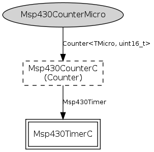

Component: tos.platforms.telosa.chips.cc2420x.tmicro.Msp430CounterMicroC
configuration Msp430CounterMicroC
Msp430Counter32khC provides the standard 32khz counter for the MSP430.
- Author:
-
Cory Sharp <cssharp@eecs.berkeley.edu>
- See:
-
Please refer to TEP 102 for more information about this component and its
intended use.
Provides
interface
Counter<TMicro, uint16_t> as
Msp430CounterMicroWiring
